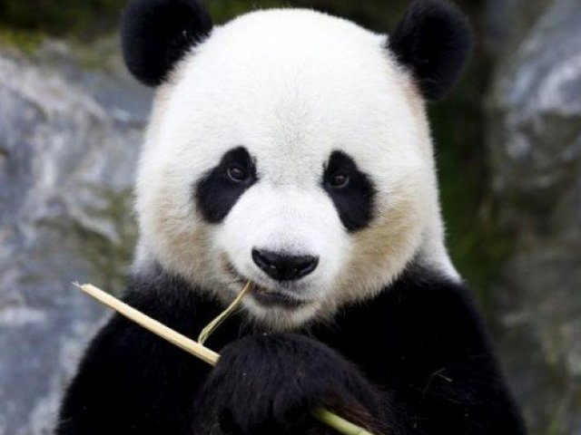
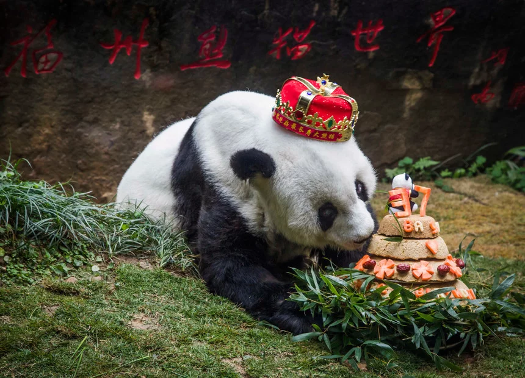

The giant panda (Ailuropoda melanoleuca; Chinese: 大熊猫; pinyin: dà xióng māo), also known as panda bear or simply panda, is a bear native to south central China. It is easily recognized by the large, distinctive black patches around its eyes, over the ears, and across its round body. The name "giant panda" is sometimes used to distinguish it from the red panda. Though it belongs to the order Carnivora, the giant panda is a folivore, with bamboo shoots and leaves making up more than 99% of its diet. Giant pandas in the wild will occasionally eat other grasses, wild tubers, or even meat in the form of birds, rodents, or carrion. In captivity, they may receive honey, eggs, fish, yams, shrub leaves, oranges, or bananas along with specially prepared food.
The giant panda lives in a few mountain ranges in central China, mainly in Sichuan, but also in neighbouring Shaanxi and Gansu. As a result of farming, deforestation, and other development, the giant panda has been driven out of the lowland areas where it once lived.
The giant panda is a conservation-reliant vulnerable species. A 2007 report showed 239 pandas living in captivity inside China and another 27 outside the country. As of December 2014, 49 giant pandas lived in captivity outside China, living in 18 zoos in 13 different countries. Wild population estimates vary; one estimate shows that there are about 1,590 individuals living in the wild, while a 2006 study via DNA analysis estimated that this figure could be as high as 2,000 to 3,000. Some reports also show that the number of giant pandas in the wild is on the rise. In March 2015, conservation news site Mongabay stated that the wild giant panda population had increased by 268, or 16.8%, to 1,864. In 2016, the IUCN reclassified the species from "endangered" to "vulnerable".
While the dragon has often served as China's national symbol, internationally the giant panda has often filled this role. As such, it is becoming widely used within China in international contexts, for example, appearing since 1982 on gold panda bullion coins and as one of the five Fuwa mascots of the Beijing Olympics.
For many decades, the precise taxonomic classification of the giant panda was under debate because it shares characteristics with both bears and raccoons. However, molecular studies indicate the giant panda is a true bear, part of the family Ursidae. These studies show it differentiated early (about 19 million years ago) from the main ursine stock; since it is the most basal member of the group, it is equidistant from all other extant ursids. The giant panda has been referred to as a living fossil.
Despite the shared name, habitat type, and diet, as well as a unique enlarged bone called the pseudo thumb (which helps them grip the bamboo shoots they eat) the giant panda and red panda are only distantly related.
The word panda was borrowed into English from French, but no conclusive explanation of the origin of the French word panda has been found. The closest candidate is the Nepali word ponya, possibly referring to the adapted wrist bone of the red panda, which is native to Nepal. The Western world originally applied this name to the red panda.
In many older sources, the name "panda" or "common panda" refers to the lesser-known red panda, thus necessitating the inclusion of "giant" and "lesser/red" prefixes in front of the names. Even in 2013, the Encyclopædia Britannica still used "giant panda" or "panda bear" for the bear, and simply "panda" for the red panda, despite the popular usage of the word "panda" to refer to giant pandas.
Since the earliest collection of Chinese writings, the Chinese language has given the bear 20 different names, such as huāxióng (花熊 "spotted bear") and zhúxióng (竹熊 "bamboo bear"). The most popular names in China today is dàxióngmāo (大熊貓 literally "giant bear cat"), or simply xióngmāo (熊貓 "bear cat"). The name xióngmāo (熊貓 "bear cat") was originally used to describe the red panda (Ailurus fulgens), but since the giant panda was thought to be closely related to the red panda, dàxióngmāo (大熊貓) was named relatively.
In Taiwan, another popular name for panda is the inverted dàmāoxióng (大貓熊 "giant cat bear"), though many encyclopediae and dictionaries in Taiwan still use the "bear cat" form as the correct name. Some linguists argue, in this construction, "bear" instead of "cat" is the base noun, making this name more grammatically and logically correct, which may have led to the popular choice despite official writings. This name did not gain its popularity until 1988, when a private zoo in Tainan painted a sun bear black and white and created the Tainan fake panda incident.
The giant panda has luxuriant black-and-white fur. Adults measure around 1.2 to 1.9 m (4 to 6 ft) long, including a tail of about 10–15 cm (3.9–5.9 in), and 60 to 90 cm (2.0 to 3.0 ft) tall at the shoulder. Males can weigh up to 160 kg (350 lb). Females (generally 10–20% smaller than males) can weigh as little as 70 kg (150 lb), but can also weigh up to 125 kg (276 lb). Average adult weight is 100 to 115 kg (220 to 254 lb).
The giant panda has a body shape typical of bears. It has black fur on its ears, eye patches, muzzle, legs, arms and shoulders. The rest of the animal's coat is white. Although scientists do not know why these unusual bears are black and white, speculation suggests that the bold colouring provides effective camouflage in their shade-dappled snowy and rocky habitat. The giant panda's thick, wooly coat keeps it warm in the cool forests of its habitat. The panda's skull shape is typical of durophagous carnivorans. It has evolved from previous ancestors to exhibit larger molars with increased complexity and expanded temporal fossa. A 110.45 kg (243.5 lb) giant panda has a 3D canine teeth bite force of 2603.47 newtons and bite force quotient of 292. Another study had a 117.5 kg (259 lb) giant panda bite of 1298.9 newtons (BFQ 151.4) at canine teeth and 1815.9 newtons (BFQ 141.8) at carnassial teeth.
The giant panda's paw has a "thumb" and five fingers; the "thumb" – actually a modified sesamoid bone – helps it to hold bamboo while eating. Stephen Jay Gould discusses this feature in his book of essays on evolution and biology, The Panda's Thumb.
The giant panda's tail, measuring 10 to 15 cm (4 to 6 in), is the second-longest in the bear family. (The longest belongs to the sloth bear.)
The giant panda typically lives around 20 years in the wild and up to 30 years in captivity. A female named Jia Jia was the oldest giant panda ever in captivity, born in 1978 and died at an age of 38 on 16 October 2016.
Despite its taxonomic classification as a carnivoran, the giant panda's diet is primarily herbivorous, consisting almost exclusively of bamboo. However, the giant panda still has the digestive system of a carnivore, as well as carnivore-specific genes, and thus derives little energy and little protein from consumption of bamboo. Its ability to digest cellulose is ascribed to the microbes in its gut. Pandas are born with sterile intestines and require bacteria obtained from their mother's feces to digest vegetation. The giant panda is a highly specialised animal with unique adaptations, and has lived in bamboo forests for millions of years.
The average giant panda eats as much as 9 to 14 kg (20 to 30 lb) of bamboo shoots a day to compensate for the limited energy content of its diet. Ingestion of such a large quantity of material is possible and necessary because of the rapid passage of large amounts of indigestible plant material through the short, straight digestive tract. It is also noted, however, that such rapid passage of digesta limits the potential of microbial digestion in the gastrointestinal tract, limiting alternative forms of digestion. Given this voluminous diet, the giant panda defecates up to 40 times a day. The limited energy input imposed on it by its diet has affected the panda's behavior. The giant panda tends to limit its social interactions and avoids steeply sloping terrain to limit its energy expenditures.
Two of the panda's most distinctive features, its large size and round face, are adaptations to its bamboo diet. Anthropologist Russell Ciochon observed: "[much] like the vegetarian gorilla, the low body surface area to body volume [of the giant panda] is indicative of a lower metabolic rate. This lower metabolic rate and a more sedentary lifestyle allows the giant panda to subsist on nutrient poor resources such as bamboo." Similarly, the giant panda's round face is the result of powerful jaw muscles, which attach from the top of the head to the jaw. Large molars crush and grind fibrous plant material.
The morphological characteristics of extinct relatives of the giant panda suggest that while the ancient giant panda was omnivorous 7 million years ago (mya), it only became herbivorous some 2–2.4 mya with the emergence of A. microta. Genome sequencing of the giant panda suggests that the dietary switch could have initiated from the loss of the sole T1R1/T1R3 umami taste receptor, resulting from two frameshift mutations within the T1R1 exons. Umami taste corresponds to high levels of glutamate as found in meat and may have thus altered the food choice of the giant panda. Although the pseudogenisation of the umami taste receptor in Ailuropoda coincides with the dietary switch to herbivory, it is likely a result of, and not the reason for, the dietary change. The mutation time for the T1R1 gene in the giant panda is estimated to 4.2 mya while fossil evidence indicates bamboo consumption in the giant panda species at least 7 mya, signifying that although complete herbivory occurred around 2 mya, the dietary switch was initiated prior to T1R1 loss-of-function.
Pandas eat any of 25 bamboo species in the wild, such as Fargesia dracocephala and Fargesia rufa. Only a few bamboo species are widespread at the high altitudes pandas now inhabit. Bamboo leaves contain the highest protein levels; stems have less.
Because of the synchronous flowering, death, and regeneration of all bamboo within a species, the giant panda must have at least two different species available in its range to avoid starvation. While primarily herbivorous, the giant panda still retains decidedly ursine teeth and will eat meat, fish, and eggs when available. In captivity, zoos typically maintain the giant panda's bamboo diet, though some will provide specially formulated biscuits or other dietary supplements.
Pandas will travel between different habitats if they need to, so they can get the nutrients that they need and to balance their diet for reproduction. For six years, scientists studied six pandas tagged with GPS collars at the Foping Reserve in the Qinling Mountains. They took note of their foraging and mating habits and analyzed samples of their food and feces. The pandas would move from the valleys into the Qinling Mountains and would only return to the valleys in autumn. During the summer months bamboo shoots rich in protein are only available at higher altitudes which causes low calcium rates in the pandas and during breeding season the pandas would trek back down to eat bamboo leaves rich in calcium.
Bom dia